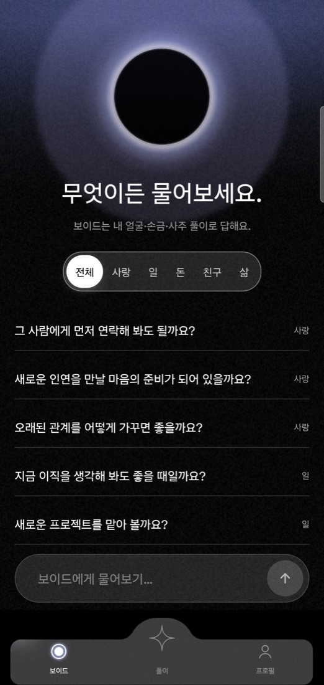
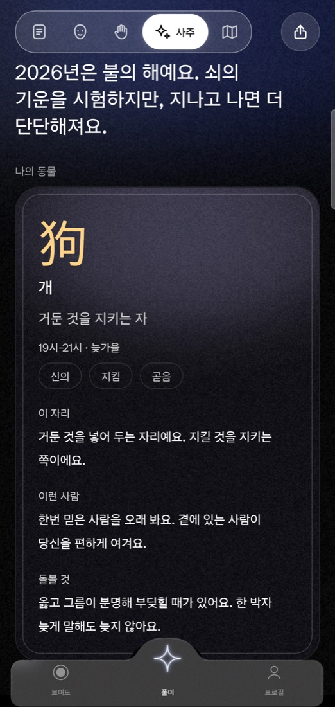
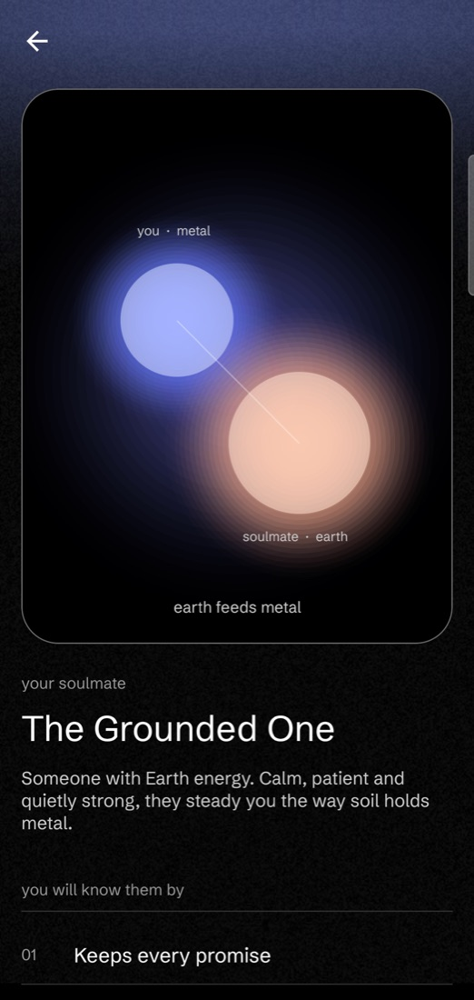

Your face, read by AI.
KLOVER looks at one photo of your face the way Korean face readers have for centuries, then reads it against your birth chart. You get one reading in plain words, in about a minute.
Free. No sign-up, no name.

In Korea a face was never read alone. A reader asked for your birthday too, because the face shows what you were given and the birth chart shows when it moves. KLOVER's model works the same way.
How a reading is made
Two old methods and one model. Face reading looks at what you were given, the four pillars look at timing. They answer different questions, so they never compete.
First, the face
From one photo the model finds the thirteen positions down the middle of the face, then the five features and the three zones around them.
Then, the birth date
Your date and, if you know it, the hour give four pillars of two characters each. They are read from right to left.
| 時Hour | 日Day | 月Month | 年Year |
|---|---|---|---|
| 丙 | 庚 | 甲 | 戊 |
| 戌 | 戌 | 寅 | 寅 |
Example for March 4, 1998, 7:30 PM. The day pillar 庚戌 sits at the center of the chart.
Last, both together
The model weighs what the face shows against what the chart says about timing, and writes one reading.
“A wide forehead and an open brow give you an early start. Born on a Metal day, you sharpen with practice. This season, finish what you already began.”
From an example reading.
The app, screen by screen
Four screens and about a minute. There is no account to make and nothing to fill in about you except a date.
When were you born?
Your eight characters fill in as you type.A wide brow and steady Metal
A broad upper zone and an open space between the brows point to early luck.
Born on a 庚戌 day. Yang Metal sharpens with practice.
Push the plans you are already sure of. Autumn is on your side.

Your guardian's day. Finish one thing you started.
The Android build, as it runs today
Captured from our current test build on a phone. The app runs in Korean and English.



And a guardian for the day you were born
Every day in the sixty-day cycle carries one of twelve earthly branches, and each branch has a guardian. Yours depends on the day, not the year, so it can differ from your zodiac sign.

You can also get read at the booth
While you pose for your four cuts, KLOVER reads your face and prints the reading under the photos.
Scan the QR on the print to open the full reading of the five features. Tap “Add to my Myeongbu” and it stays in the app with everything else.
The photo stays in the print.
What we don't ask for
No account. We never ask for your name or your phone number.
Two characters, not your birthday. Your birth date isn't stored as is. Only the two characters used in the calculation stay.
The hour stays with you. Birth time is asked only on the four pillars screen and stays on your device.
Erase it whenever you like. Delete your seal any time. The connections go with it.
It's for fun. A reading is not health or financial advice.
Under 14? Read it with a parent or guardian.
Who makes KLOVER
KLOVER is built by Nexrail Inc. in Seoul, a small team working across the model, the readings and the app.
- Company
- Nexrail Inc. (주식회사 넥스레일)
- CEO
- Yongpil Cho
- Founded
- June 2026 · Software development
- Business registration no.
- 855-81-04458
- Office
- 7F 50A, 38 Seolleung-ro 86-gil, Gangnam-gu, Seoul
- Contact
- team@klover.org
See what your face says.
One photo, one birth date, one reading. Free on Google Play.